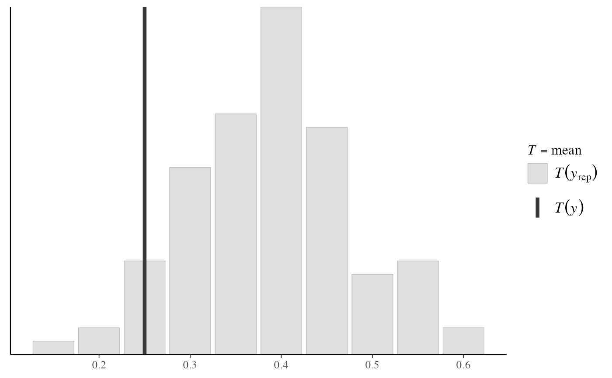
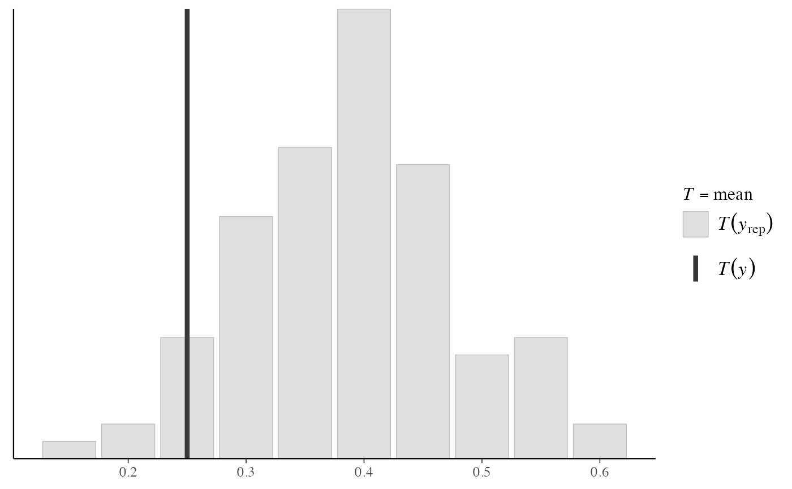
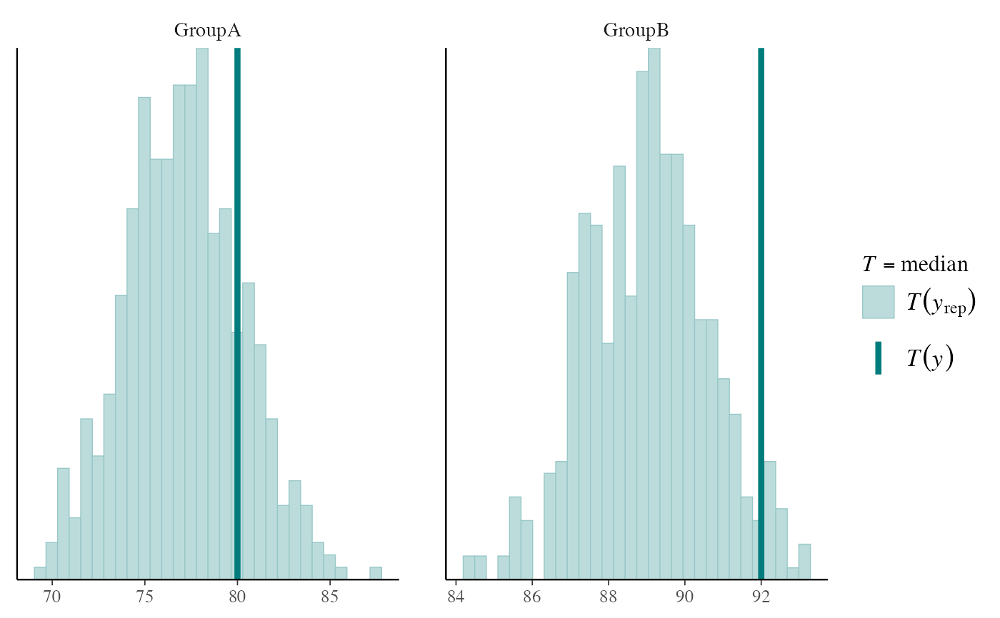
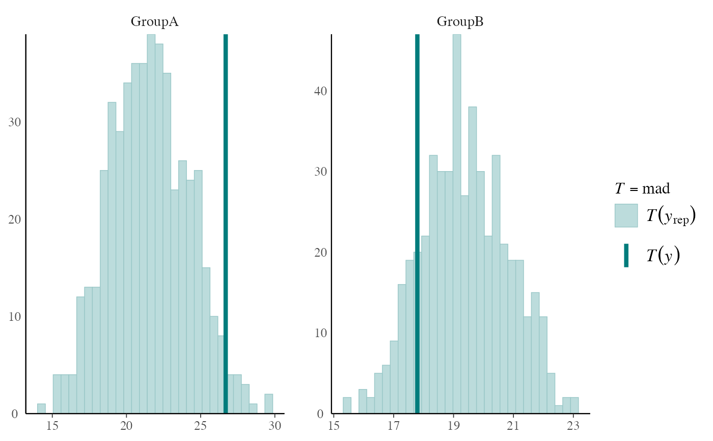
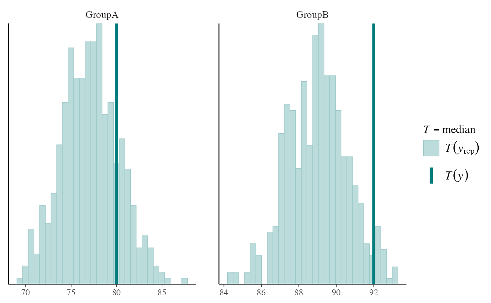
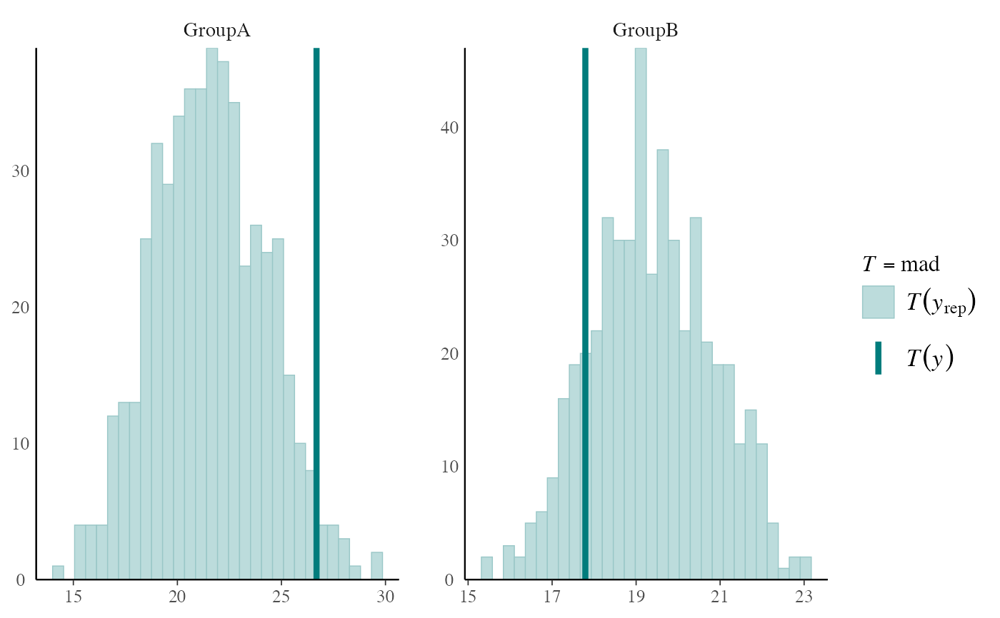
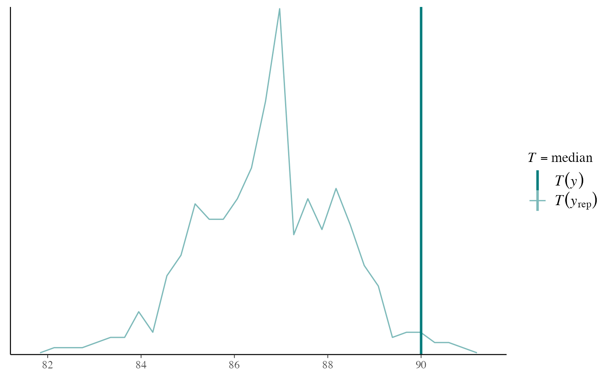
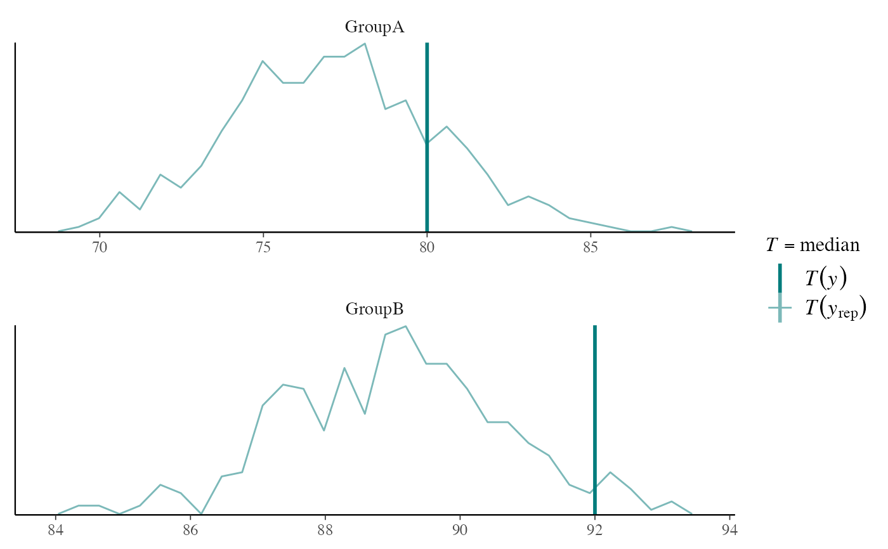
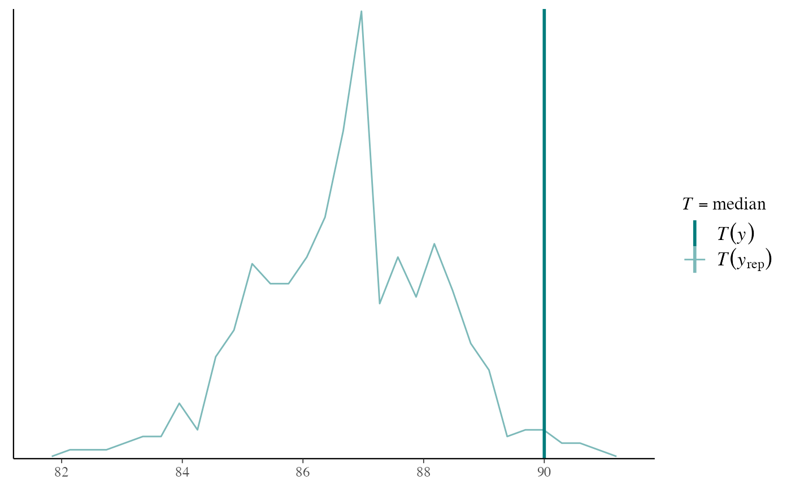
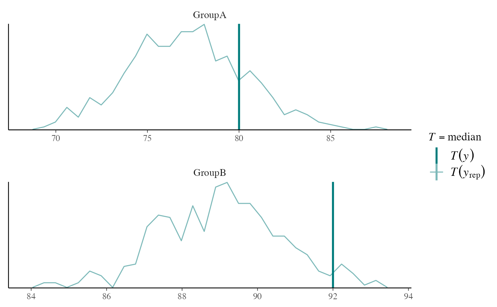

The distribution of a (test) statistic T(yrep), or a pair of
(test) statistics, over the simulated datasets in yrep, compared to the
observed value T(y) computed from the data y. See the
Plot Descriptions and Details sections, below, as
well as Gabry et al. (2019).
NOTE: Although the default test statistic is the mean, this is unlikely to detect anything interesting in most cases. In general we recommend using some other test statistic as discussed in Section 5 of Gabry et al. (2019).
ppc_stat(
y,
yrep,
stat = "mean",
...,
discrete = FALSE,
binwidth = NULL,
bins = NULL,
breaks = NULL,
freq = TRUE
)
ppc_stat_grouped(
y,
yrep,
group,
stat = "mean",
...,
discrete = FALSE,
facet_args = list(),
binwidth = NULL,
bins = NULL,
breaks = NULL,
freq = TRUE
)
ppc_stat_freqpoly(
y,
yrep,
stat = "mean",
...,
facet_args = list(),
binwidth = NULL,
bins = NULL,
freq = TRUE
)
ppc_stat_freqpoly_grouped(
y,
yrep,
group,
stat = "mean",
...,
facet_args = list(),
binwidth = NULL,
bins = NULL,
freq = TRUE
)
ppc_stat_2d(y, yrep, stat = c("mean", "sd"), ..., size = 2.5, alpha = 0.7)
ppc_stat_data(y, yrep, group = NULL, stat)Arguments
- y
A vector of observations. See Details.
- yrep
An
SbyNmatrix of draws from the posterior (or prior) predictive distribution. The number of rows,S, is the size of the posterior (or prior) sample used to generateyrep. The number of columns,Nis the number of predicted observations (length(y)). The columns ofyrepshould be in the same order as the data points inyfor the plots to make sense. See the Details and Plot Descriptions sections for additional advice specific to particular plots.- stat
A single function or a string naming a function, except for the 2D plot which requires a vector of exactly two names or functions. In all cases the function(s) should take a vector input and return a scalar statistic. If specified as a string (or strings) then the legend will display the function name(s). If specified as a function (or functions) then generic naming is used in the legend.
- ...
Currently unused.
- discrete
For
ppc_stat()andppc_stat_grouped(), ifTRUEthen a bar chart is used instead of a histogram.- binwidth
Passed to
ggplot2::geom_histogram()to override the default binwidth.- bins
Passed to
ggplot2::geom_histogram()to override the default binwidth.- breaks
Passed to
ggplot2::geom_histogram()as an alternative tobinwidth.- freq
For histograms,
freq=TRUE(the default) puts count on the y-axis. Settingfreq=FALSEputs density on the y-axis. (For many plots the y-axis text is off by default. To view the count or density labels on the y-axis see theyaxis_text()convenience function.)- group
A grouping variable of the same length as
y. Will be coerced to factor if not already a factor. Each value ingroupis interpreted as the group level pertaining to the corresponding observation.- facet_args
A named list of arguments (other than
facets) passed toggplot2::facet_wrap()orggplot2::facet_grid()to control faceting. Note: ifscalesis not included infacet_argsthen bayesplot may usescales="free"as the default (depending on the plot) instead of the ggplot2 default ofscales="fixed".- size, alpha
For the 2D plot only, arguments passed to
ggplot2::geom_point()to control the appearance of scatterplot points.
Value
The plotting functions return a ggplot object that can be further
customized using the ggplot2 package. The functions with suffix
_data() return the data that would have been drawn by the plotting
function.
Details
For Binomial data, the plots may be more useful if the input contains the "success" proportions (not discrete "success" or "failure" counts).
Plot Descriptions
ppc_stat(),ppc_stat_freqpoly()A histogram/bar plot or frequency polygon of the distribution of a statistic computed by applying
statto each dataset (row) inyrep. The value of the statistic in the observed data,stat(y), is overlaid as a vertical line. More details and example usage ofppc_stat()can be found in Gabry et al. (2019).ppc_stat_grouped(),ppc_stat_freqpoly_grouped()The same as
ppc_stat()andppc_stat_freqpoly(), but a separate plot is generated for each level of a grouping variable. More details and example usage ofppc_stat_grouped()can be found in Gabry et al. (2019).ppc_stat_2d()A scatterplot showing the joint distribution of two statistics computed over the datasets (rows) in
yrep. The value of the statistics in the observed data is overlaid as large point.
References
Gabry, J. , Simpson, D. , Vehtari, A. , Betancourt, M. and Gelman, A. (2019), Visualization in Bayesian workflow. J. R. Stat. Soc. A, 182: 389-402. doi:10.1111/rssa.12378. (journal version, arXiv preprint, code on GitHub)
Gelman, A., Carlin, J. B., Stern, H. S., Dunson, D. B., Vehtari, A., and Rubin, D. B. (2013). Bayesian Data Analysis. Chapman & Hall/CRC Press, London, third edition. (Ch. 6)
See also
Other PPCs:
PPC-censoring,
PPC-discrete,
PPC-distributions,
PPC-errors,
PPC-intervals,
PPC-loo,
PPC-overview,
PPC-scatterplots
Examples
y <- example_y_data()
yrep <- example_yrep_draws()
ppc_stat(y, yrep, stat = "median")
#> `stat_bin()` using `bins = 30`. Pick better value with `binwidth`.
 ppc_stat(y, yrep, stat = "sd") + legend_none()
#> `stat_bin()` using `bins = 30`. Pick better value with `binwidth`.
ppc_stat(y, yrep, stat = "sd") + legend_none()
#> `stat_bin()` using `bins = 30`. Pick better value with `binwidth`.
 # discrete data example
set.seed(0)
y_discrete <- rbinom(20, 1, 0.2)
yrep_discrete <- matrix(rbinom(2000, 1, prob = 0.4), 1000, 20, byrow = TRUE)
ppc_stat(y_discrete, yrep_discrete, stat = "mean", discrete = TRUE)
#> Note: in most cases the default test statistic 'mean' is too weak to detect anything of interest.

# use your own function for the 'stat' argument
color_scheme_set("brightblue")
q25 <- function(y) quantile(y, 0.25)
ppc_stat(y, yrep, stat = "q25") # legend includes function name
#> `stat_bin()` using `bins = 30`. Pick better value with `binwidth`.
# discrete data example
set.seed(0)
y_discrete <- rbinom(20, 1, 0.2)
yrep_discrete <- matrix(rbinom(2000, 1, prob = 0.4), 1000, 20, byrow = TRUE)
ppc_stat(y_discrete, yrep_discrete, stat = "mean", discrete = TRUE)
#> Note: in most cases the default test statistic 'mean' is too weak to detect anything of interest.

# use your own function for the 'stat' argument
color_scheme_set("brightblue")
q25 <- function(y) quantile(y, 0.25)
ppc_stat(y, yrep, stat = "q25") # legend includes function name
#> `stat_bin()` using `bins = 30`. Pick better value with `binwidth`.
 # can define the function in the 'stat' argument instead of
# using its name but then the legend doesn't include the function name
ppc_stat(y, yrep, stat = function(y) quantile(y, 0.25))
#> `stat_bin()` using `bins = 30`. Pick better value with `binwidth`.
# plots by group
color_scheme_set("teal")
group <- example_group_data()
ppc_stat_grouped(y, yrep, group, stat = "median")
#> `stat_bin()` using `bins = 30`. Pick better value with `binwidth`.

ppc_stat_grouped(y, yrep, group, stat = "mad") + yaxis_text()
#> `stat_bin()` using `bins = 30`. Pick better value with `binwidth`.

# discrete data example with groups
group_discrete <- rep(c("First Half","Second Half"), each = 10)
ppc_stat_grouped(y_discrete, yrep_discrete, group_discrete, stat = "mean", discrete = TRUE)
#> Note: in most cases the default test statistic 'mean' is too weak to detect anything of interest.
# can define the function in the 'stat' argument instead of
# using its name but then the legend doesn't include the function name
ppc_stat(y, yrep, stat = function(y) quantile(y, 0.25))
#> `stat_bin()` using `bins = 30`. Pick better value with `binwidth`.
# plots by group
color_scheme_set("teal")
group <- example_group_data()
ppc_stat_grouped(y, yrep, group, stat = "median")
#> `stat_bin()` using `bins = 30`. Pick better value with `binwidth`.

ppc_stat_grouped(y, yrep, group, stat = "mad") + yaxis_text()
#> `stat_bin()` using `bins = 30`. Pick better value with `binwidth`.

# discrete data example with groups
group_discrete <- rep(c("First Half","Second Half"), each = 10)
ppc_stat_grouped(y_discrete, yrep_discrete, group_discrete, stat = "mean", discrete = TRUE)
#> Note: in most cases the default test statistic 'mean' is too weak to detect anything of interest.
 # force y-axes to have same scales, allow x axis to vary
ppc_stat_grouped(y, yrep, group, facet_args = list(scales = "free_x")) + yaxis_text()
#> Note: in most cases the default test statistic 'mean' is too weak to detect anything of interest.
#> `stat_bin()` using `bins = 30`. Pick better value with `binwidth`.
# force y-axes to have same scales, allow x axis to vary
ppc_stat_grouped(y, yrep, group, facet_args = list(scales = "free_x")) + yaxis_text()
#> Note: in most cases the default test statistic 'mean' is too weak to detect anything of interest.
#> `stat_bin()` using `bins = 30`. Pick better value with `binwidth`.
 # the freqpoly plots use frequency polygons instead of histograms
ppc_stat_freqpoly(y, yrep, stat = "median")
#> `stat_bin()` using `bins = 30`. Pick better value with `binwidth`.

ppc_stat_freqpoly_grouped(y, yrep, group, stat = "median", facet_args = list(nrow = 2))
#> `stat_bin()` using `bins = 30`. Pick better value with `binwidth`.

# ppc_stat_2d allows 2 statistics and makes a scatterplot
bayesplot_theme_set(ggplot2::theme_linedraw())
color_scheme_set("viridisE")
ppc_stat_2d(y, yrep, stat = c("mean", "sd"))
#> Note: in most cases the default test statistic 'mean' is too weak to detect anything of interest.
bayesplot_theme_set(ggplot2::theme_grey())
color_scheme_set("brewer-Paired")
ppc_stat_2d(y, yrep, stat = c("median", "mad"))
# the freqpoly plots use frequency polygons instead of histograms
ppc_stat_freqpoly(y, yrep, stat = "median")
#> `stat_bin()` using `bins = 30`. Pick better value with `binwidth`.

ppc_stat_freqpoly_grouped(y, yrep, group, stat = "median", facet_args = list(nrow = 2))
#> `stat_bin()` using `bins = 30`. Pick better value with `binwidth`.

# ppc_stat_2d allows 2 statistics and makes a scatterplot
bayesplot_theme_set(ggplot2::theme_linedraw())
color_scheme_set("viridisE")
ppc_stat_2d(y, yrep, stat = c("mean", "sd"))
#> Note: in most cases the default test statistic 'mean' is too weak to detect anything of interest.
bayesplot_theme_set(ggplot2::theme_grey())
color_scheme_set("brewer-Paired")
ppc_stat_2d(y, yrep, stat = c("median", "mad"))
 # reset aesthetics
color_scheme_set()
bayesplot_theme_set()
# reset aesthetics
color_scheme_set()
bayesplot_theme_set()